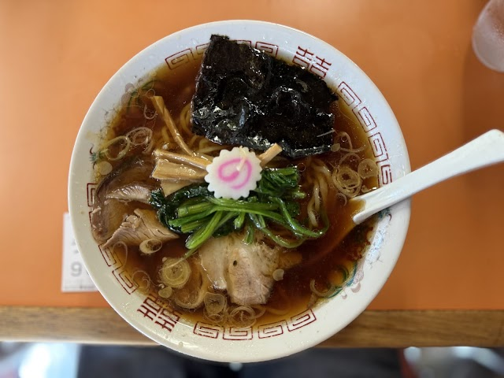
| 営業時間 | 月・火・水・木・金・土・日 11:00〜19:00 |
|---|---|
| 定休日 | なし(要最終確認) |
| 住所 | 新潟県長岡市宮内３丁目５−３ |
| 予約 | 要確認 — ☎ 0258-34-1186 ／ 公式サイト |
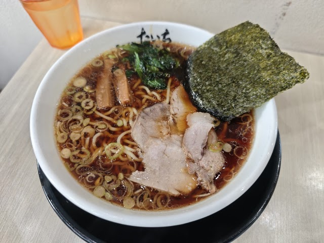
| 営業時間 | 月・火・水・金 11:00〜19:00 ／ 土・日 10:00〜19:00 |
|---|---|
| 定休日 | 木曜 |
| 住所 | 新潟県長岡市堺東町５０ |
| 予約 | 要確認 — ☎ 0258-29-3259 ／ 公式サイト |
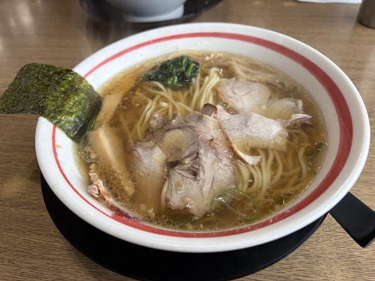
| 営業時間 | 月・火・水・木・金・土・日 11:00〜15:30, 17:00〜21:00 |
|---|---|
| 定休日 | なし(要最終確認) |
| 住所 | 新潟県長岡市蓮潟４丁目１１−１８ |
| 予約 | 要確認 — ☎ 0258-89-8536 ／ 公式サイト |
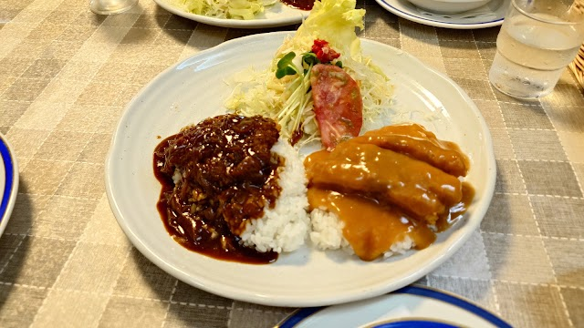
| 営業時間 | 月・火・水・金・土・日 11:30〜21:00 |
|---|---|
| 定休日 | 木曜 |
| 住所 | 新潟県長岡市坂之上町２丁目３−６ 若満都ビル 2階 |
| 予約 | 可 — ☎ 0258-34-3305 ／ 公式サイト |
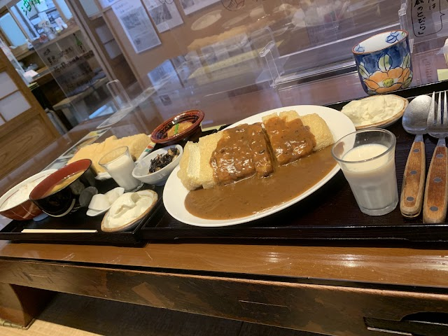
| 営業時間 | 月・水・木・金・土・日 9:00〜17:30 |
|---|---|
| 定休日 | 火曜 |
| 住所 | 新潟県長岡市栄町２丁目８−２６ |
| 予約 | 要確認 — ☎ 0258-53-2014 ／ 公式サイト |
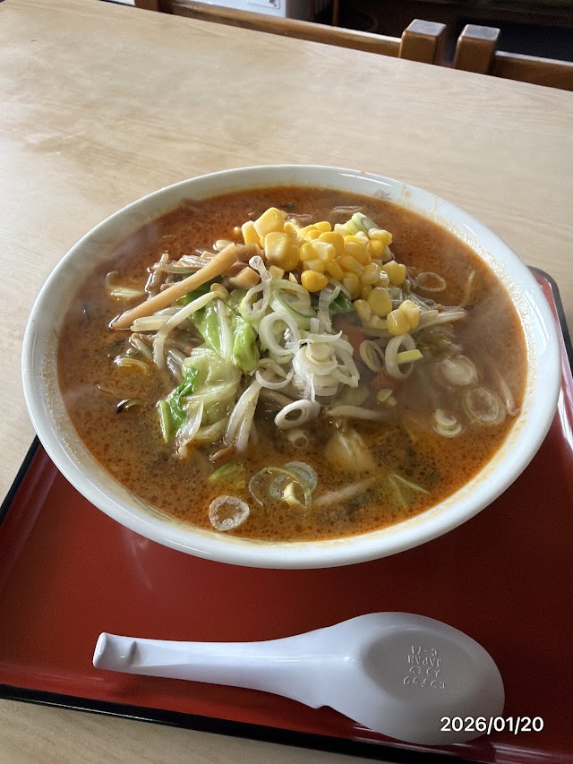
| 営業時間 | 月・火・木・金・土 11:00〜15:00 |
|---|---|
| 定休日 | 水・日曜 |
| 住所 | 新潟県長岡市金町２丁目１−１ |
| 予約 | 要確認 — ☎ 0258-52-2746 |
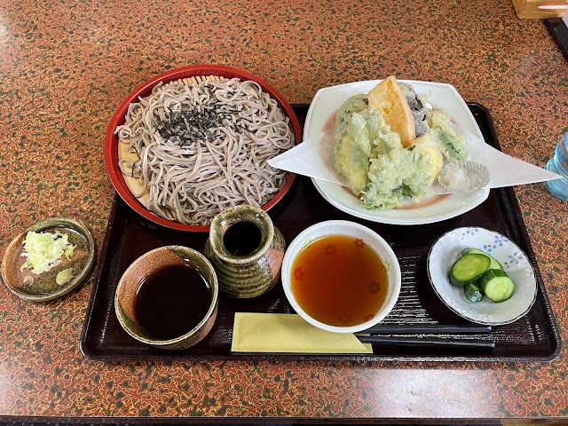
| 営業時間 | 火・水・土・日 11:00〜14:00 |
|---|---|
| 定休日 | 月・木・金曜 |
| 住所 | 新潟県長岡市山古志虫亀９４７ |
| 予約 | 要確認 — ☎ 0258-41-1144 ／ 公式サイト |
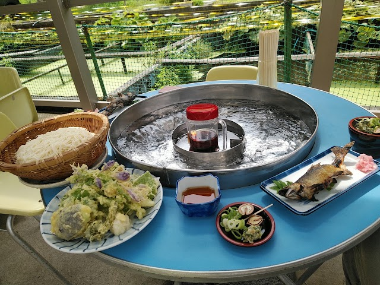
| 営業時間 | 月・水・木・金・土・日 11:00〜17:00 |
|---|---|
| 定休日 | 火曜 |
| 住所 | 新潟県長岡市栃堀６９６９ |
| 予約 | 要確認 — ☎ 0258-52-5395 ／ 公式サイト |
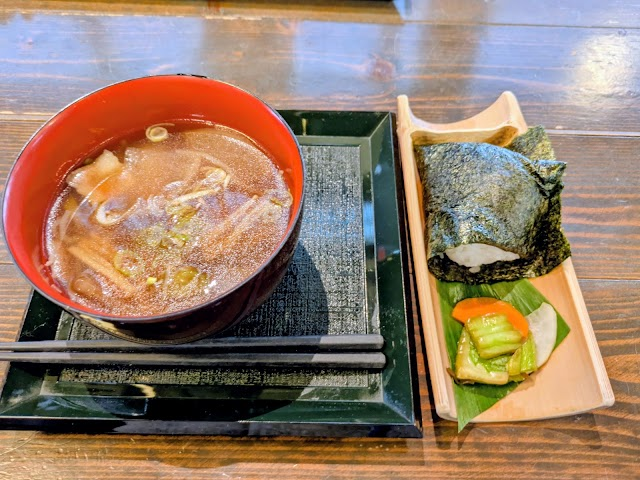
| 営業時間 | 月・火・水・木・金・土・日 9:00〜17:00 |
|---|---|
| 定休日 | なし(要最終確認) |
| 住所 | 新潟県長岡市島崎５７１３−２ |
| 予約 | 要確認 — ☎ 0258-41-8110 ／ 公式サイト |
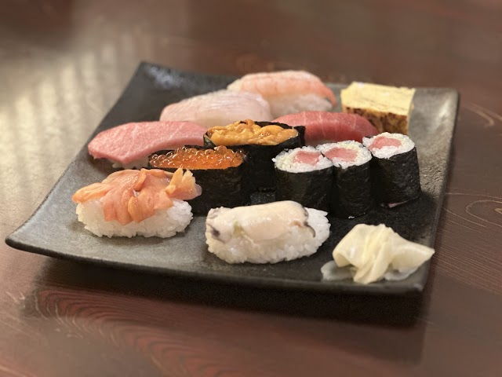
| 営業時間 | 月・火・水・木・金・土・日 11:00〜13:30, 17:00〜22:30 |
|---|---|
| 定休日 | なし(要最終確認) |
| 住所 | 新潟県長岡市台町１丁目３−１０ |
| 予約 | 可 — ☎ 0258-34-1432 ／ 公式サイト |
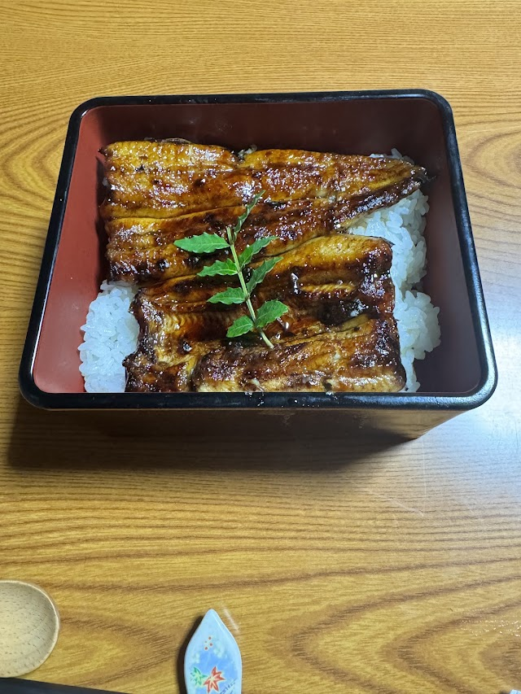
| 営業時間 | 火・水・木・金・土 11:30〜14:00, 17:00〜22:00 |
|---|---|
| 定休日 | 月・日曜 |
| 住所 | 新潟県長岡市台町２丁目５−２３ |
| 予約 | 可 — ☎ 0258-35-4300 ／ 公式サイト |
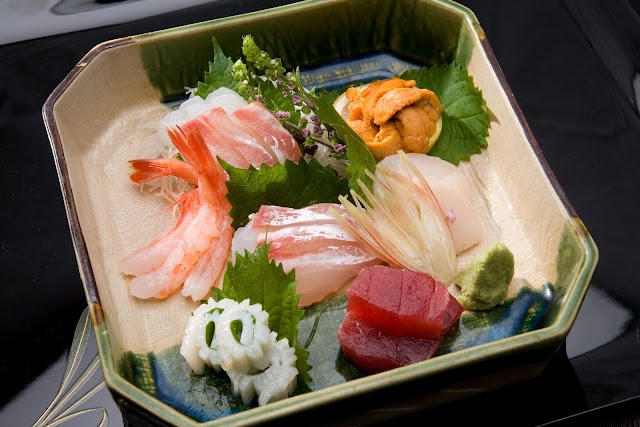
| 営業時間 | 火・水・木・金・土 11:30〜14:30, 17:00〜22:00 ／ 日 11:30〜18:00 |
|---|---|
| 定休日 | 月曜 |
| 住所 | 新潟県長岡市殿町２丁目３−５ |
| 予約 | 可 — ☎ 0120-330-638 ／ 公式サイト |
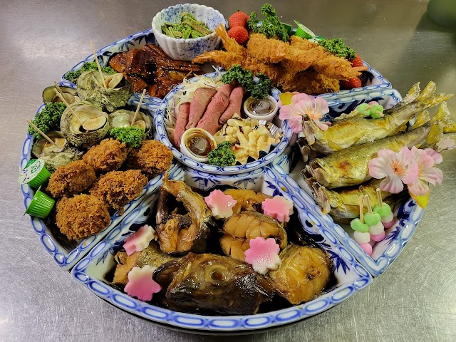
| 営業時間 | 月・火・水・木・金・土・日 10:00〜22:00 |
|---|---|
| 定休日 | なし(要最終確認) |
| 住所 | 新潟県長岡市宮内１丁目２−２５ |
| 予約 | 可 — ☎ 0258-32-0994 ／ 公式サイト |
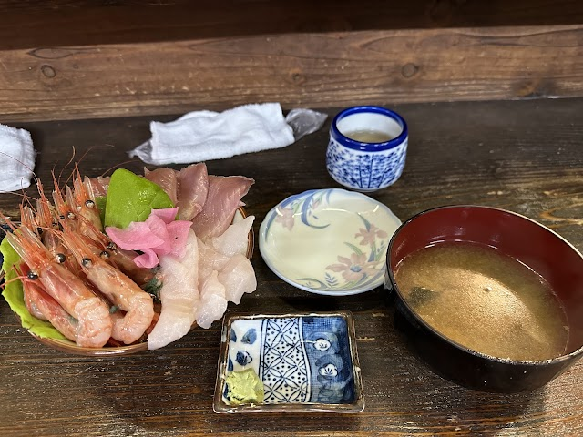
| 営業時間 | 月・火・水・木・金 11:00〜14:30 ／ 土・日 11:00〜15:00 |
|---|---|
| 定休日 | なし(要最終確認) |
| 住所 | 新潟県長岡市寺泊荒町７５９２−１９ |
| 予約 | 要確認 — ☎ 0258-75-2615 ／ 公式サイト |
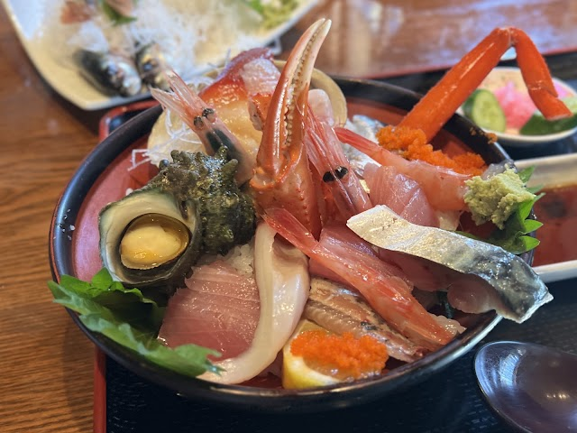
| 営業時間 | 月・火・木・金・土 11:00〜14:00, 17:00〜21:00 ／ 日 11:00〜2:00 |
|---|---|
| 定休日 | 水曜 |
| 住所 | 新潟県長岡市寺泊上田町９７６５−１１ |
| 予約 | 可 — ☎ 0258-75-3023 |
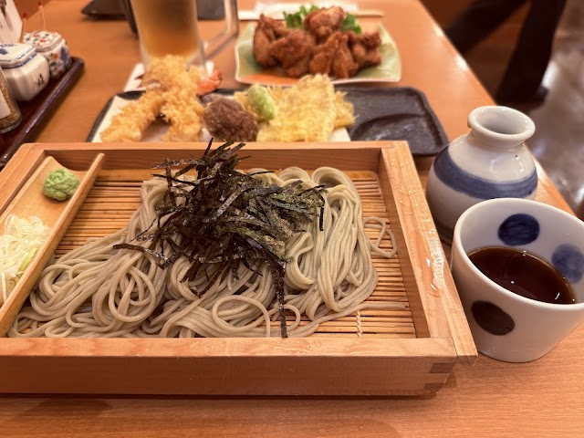
| 営業時間 | 月・火・木・金・土・日 11:00〜22:00 |
|---|---|
| 定休日 | 水曜 |
| 住所 | 新潟県長岡市殿町２丁目2ｰ9 |
| 予約 | 可 — ☎ 0258-39-0543 ／ 公式サイト |
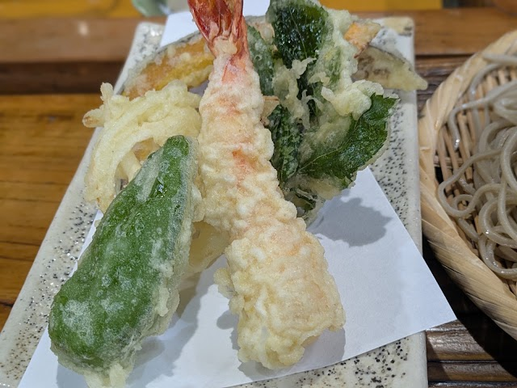
| 営業時間 | 月・水・木・金・土・日 11:30〜19:00 |
|---|---|
| 定休日 | 火曜 |
| 住所 | 新潟県長岡市脇野町８４５−３ |
| 予約 | 要確認 — ☎ 0258-42-2833 |
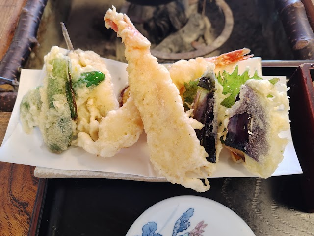
| 営業時間 | 火・水・木・金・土・日 11:00〜14:00 |
|---|---|
| 定休日 | 月曜 |
| 住所 | 新潟県長岡市天下島１丁目３−１１ |
| 予約 | 可 — ☎ 0258-53-5481 ／ 公式サイト |
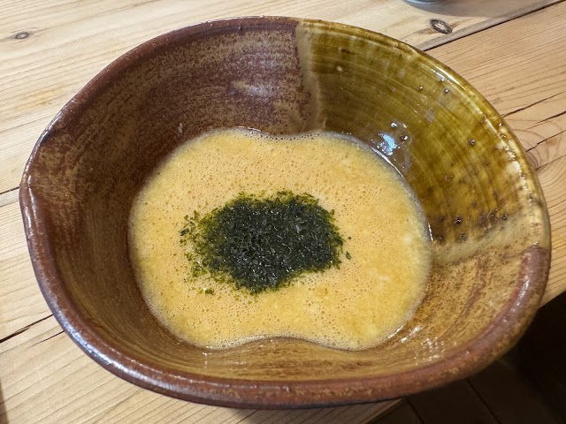
| 営業時間 | 月・火・水・木・金・土・日 11:00〜14:00, 17:00〜19:30 |
|---|---|
| 定休日 | なし(要最終確認) |
| 住所 | 新潟県長岡市宝３丁目４−３０ |
| 予約 | 可 — ☎ 0258-25-1277 ／ 公式サイト |
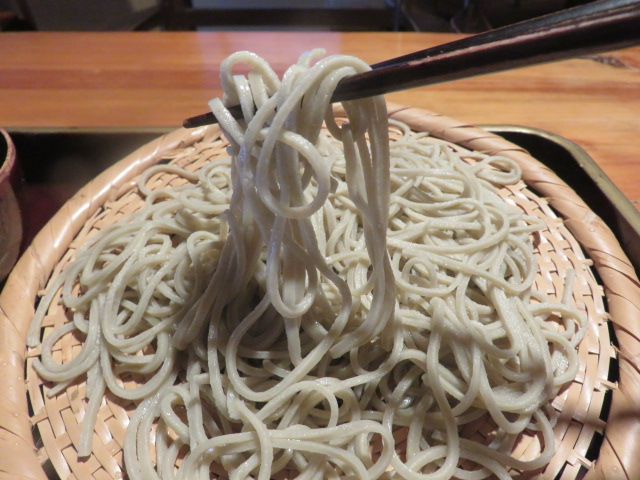
| 営業時間 | 月 18:00〜0:00 ／ 火・水・木 12:00〜14:00, 18:00〜0:00 ／ 金・土 12:00〜14:00, 18:00〜2:00 |
|---|---|
| 定休日 | 日曜 |
| 住所 | 新潟県長岡市殿町３丁目１−３ |
| 予約 | 可 — ☎ 0258-35-2933 ／ 公式サイト |
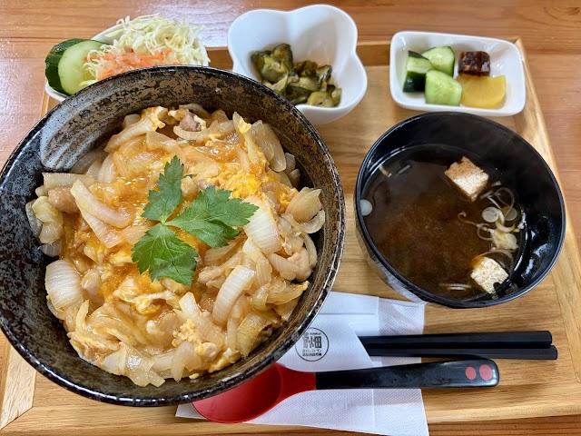
| 営業時間 | 月・火・水・木・金・土・日 9:00〜16:00 |
|---|---|
| 定休日 | なし(要最終確認) |
| 住所 | 新潟県長岡市大川戸字上ノ原１４８１−２ |
| 予約 | 要確認 — ☎ 0258-86-8344 ／ 公式サイト |
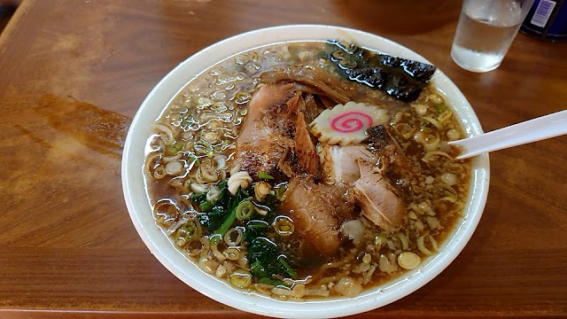
| 営業時間 | 月・火・水・木・金・土・日 11:00〜15:00 |
|---|---|
| 定休日 | なし(要最終確認) |
| 住所 | 新潟県長岡市坂之上町３丁目３−３ |
| 予約 | 要確認 — ☎ 0258-35-2002 |
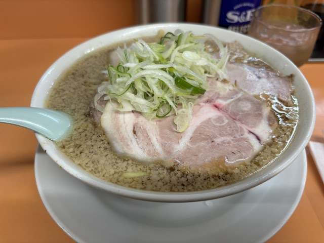
| 営業時間 | 火・水・木・金・土・日 11:00〜20:00 |
|---|---|
| 定休日 | 月曜 |
| 住所 | 新潟県長岡市神田町２丁目１−１３ |
| 予約 | 要確認 — ☎ 0258-35-0834 ／ 公式サイト |
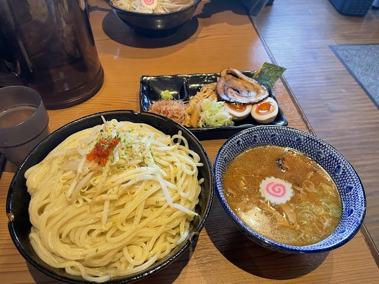
| 営業時間 | 月・日 11:00〜14:30 ／ 火・水・木・金・土 11:00〜14:30, 17:00〜20:00 |
|---|---|
| 定休日 | なし(要最終確認) |
| 住所 | 新潟県長岡市喜多町１１１２−１ |
| 予約 | 要確認 — ☎ 0258-94-4517 ／ 公式サイト |
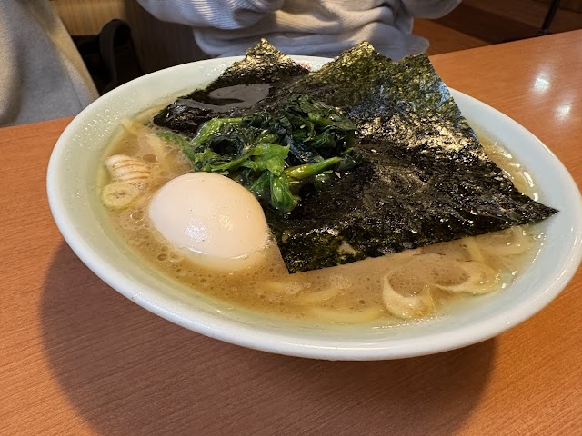
| 営業時間 | 火・水・木・金・土・日 11:00〜14:30, 17:00〜20:00 |
|---|---|
| 定休日 | 月曜 |
| 住所 | 新潟県長岡市古正寺町１丁目３０−１０ |
| 予約 | 要確認 — ☎ 0258-27-2573 ／ 公式サイト |
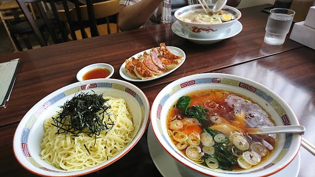
| 営業時間 | 火・水・木・金・土・日 11:00〜14:00, 17:00〜20:00 |
|---|---|
| 定休日 | 月曜 |
| 住所 | 新潟県長岡市今朝白１丁目６−１４ |
| 予約 | 要確認 — ☎ 0258-38-8188 ／ 公式サイト |
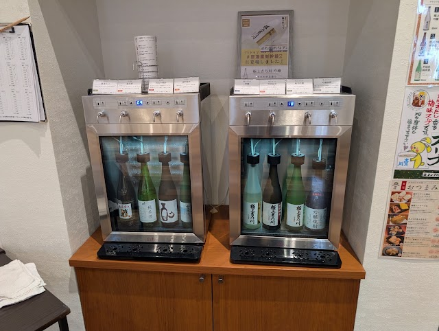
| 営業時間 | 月 9:30〜17:00 ／ 水・木・金・土・日 9:30〜16:30 |
|---|---|
| 定休日 | 火曜 |
| 住所 | 新潟県長岡市摂田屋４丁目８−１２ |
| 予約 | 要確認 — ☎ 0258-77-9910 ／ 公式サイト |
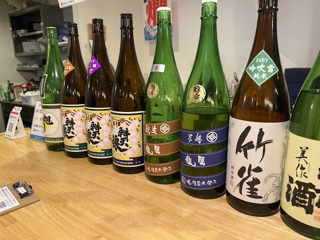
| 営業時間 | 月・水・木・金・土 17:00〜23:00 ／ 日 12:00〜19:00 |
|---|---|
| 定休日 | 火曜 |
| 住所 | 新潟県長岡市大手通１丁目4−９ メゾン大手 1F |
| 予約 | 可 — ☎ 0258-37-3137 ／ 公式サイト |
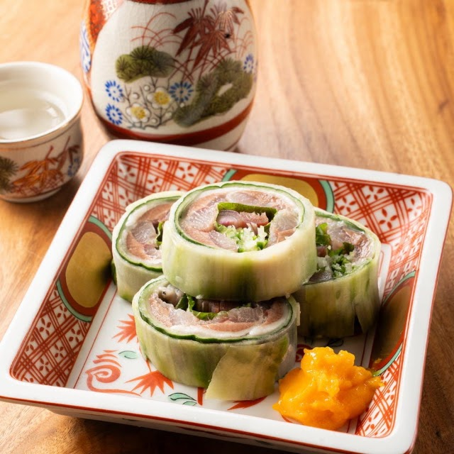
| 営業時間 | 月・火・水・木・金・土 17:30〜21:30 |
|---|---|
| 定休日 | 日曜 |
| 住所 | 新潟県長岡市殿町１丁目２−８ |
| 予約 | 可 — ☎ 050-5488-6711 ／ 公式サイト |
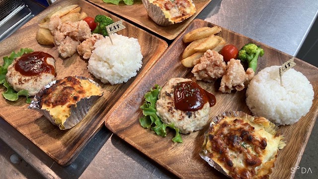
| 営業時間 | 火・水・金・土 17:30〜23:00 |
|---|---|
| 定休日 | 月・木・日曜 |
| 住所 | 新潟県長岡市下山３丁目１１８１ |
| 予約 | 可 — ☎ 050-5493-8860 ／ 公式サイト |
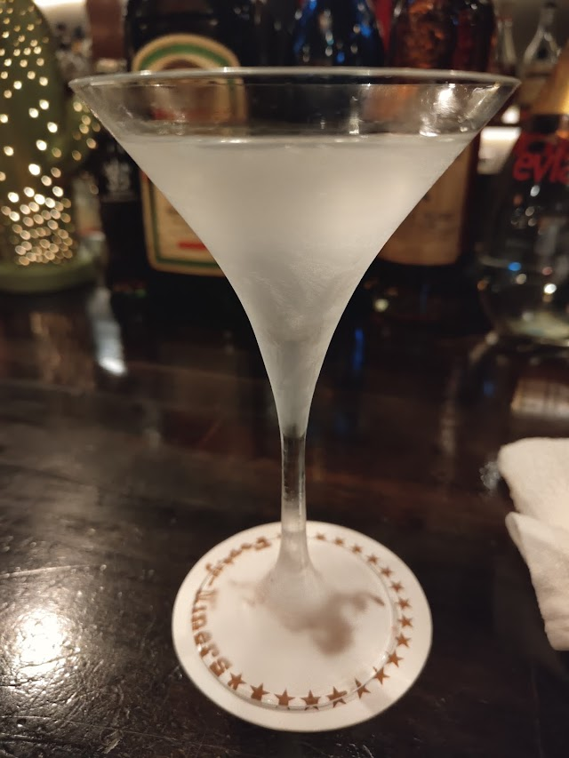
| 営業時間 | 月・火・水・木・金・土・日 18:00〜3:00 |
|---|---|
| 定休日 | なし(要最終確認) |
| 住所 | 新潟県長岡市東坂之上町２丁目３−４ いこいビル １Ｆ |
| 予約 | 可 — ☎ 0258-37-1807 ／ 公式サイト |
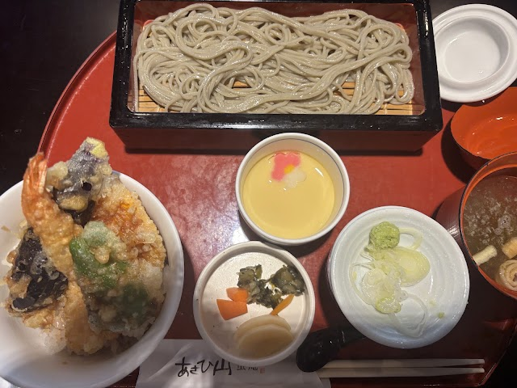
| 営業時間 | 月・火・水・木・金・土・日 11:00〜15:00 |
|---|---|
| 定休日 | なし(要最終確認) |
| 住所 | 新潟県長岡市朝日５８４−３ |
| 予約 | 可 — ☎ 0258-92-6672 ／ 公式サイト |
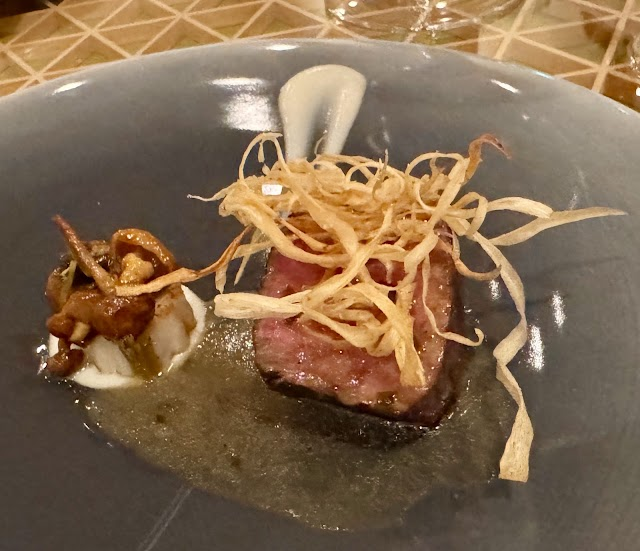
| 営業時間 | 火・水・金・土・日 11:30〜13:30, 18:00〜20:00 ／ 木 18:00〜20:00 |
|---|---|
| 定休日 | 月曜 |
| 住所 | 新潟県長岡市表町３丁目３−３ ダイアパレス表町 １階 |
| 予約 | 可 — ☎ 0258-30-4622 ／ 公式サイト |
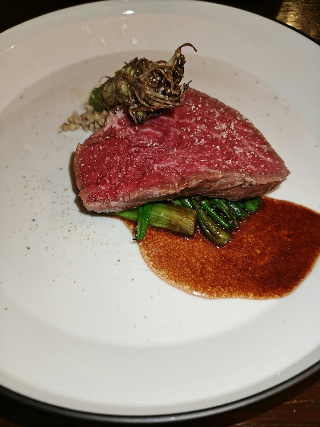
| 営業時間 | 月・火・水・木・金・土・日 18:00〜22:00 |
|---|---|
| 定休日 | なし(要最終確認) |
| 住所 | 新潟県長岡市渡里町２−９ |
| 予約 | 可 — ☎ 0258-32-1009 ／ 公式サイト |
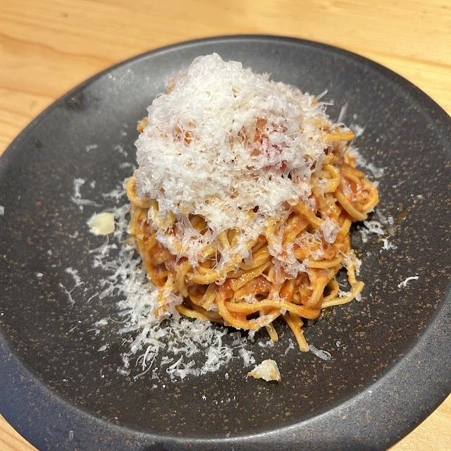
| 営業時間 | 月・火・木・金・土・日 11:00〜14:30, 18:00〜22:00 |
|---|---|
| 定休日 | 水曜 |
| 住所 | 新潟県長岡市宮内３丁目１２−３６ |
| 予約 | 可 — ☎ 0258-77-6223 ／ 公式サイト |
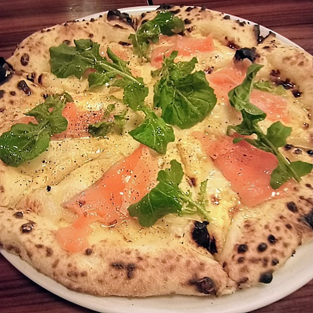
| 営業時間 | 月・火・土 11:30〜14:00, 17:30〜21:00 ／ 日 11:00〜15:00, 17:30〜21:00 |
|---|---|
| 定休日 | 水・木・金曜 |
| 住所 | 新潟県長岡市栃尾大町２−５ |
| 予約 | 可 — ☎ 0258-52-1323 ／ 公式サイト |
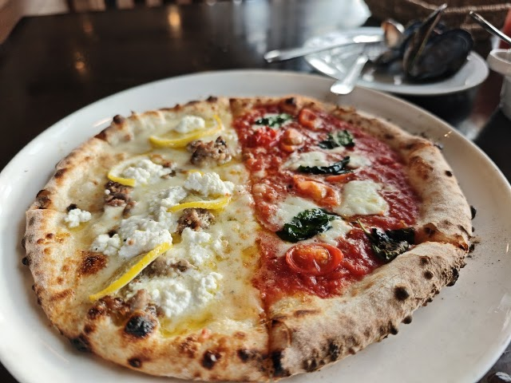
| 営業時間 | 月・木・金 11:00〜14:00, 16:30〜18:30 ／ 火 11:00〜14:00 ／ 土・日 11:00〜18:30 |
|---|---|
| 定休日 | 水曜 |
| 住所 | 新潟県長岡市寺泊野積１０７−１１７ |
| 予約 | 可 — ☎ 0258-75-5860 ／ 公式サイト |
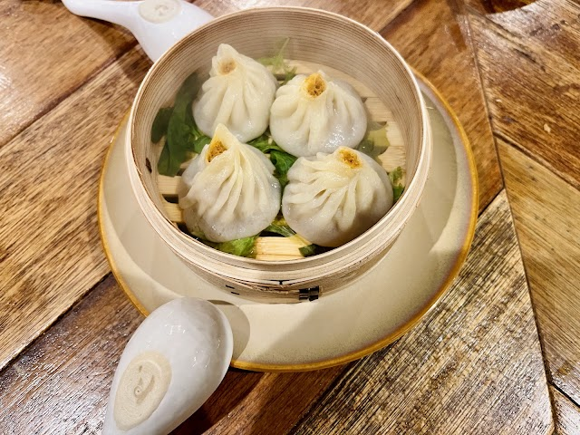
| 営業時間 | 月・火・水 11:30〜13:00, 17:30〜22:00 ／ 金・土・日 17:30〜22:00 |
|---|---|
| 定休日 | 木曜 |
| 住所 | 新潟県長岡市坂之上町２丁目３−１ |
| 予約 | 可 — ☎ 0258-88-9327 ／ 公式サイト |
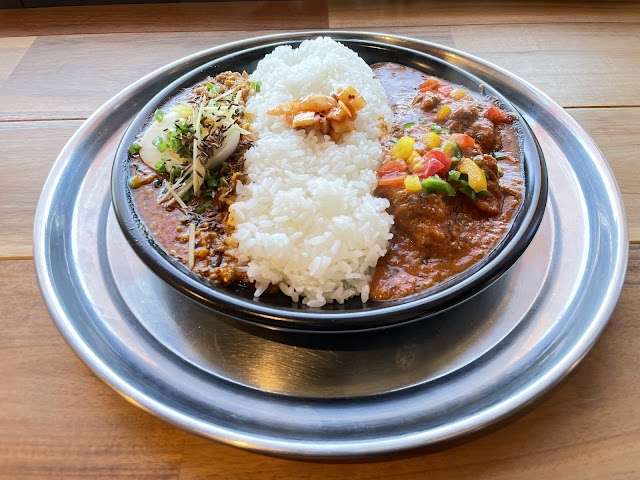
| 営業時間 | 月・水・木・金・土・日 11:00〜14:00 |
|---|---|
| 定休日 | 火曜 |
| 住所 | 新潟県長岡市希望が丘１丁目１５８−５ |
| 予約 | 要確認 — ☎ 0258-29-9119 ／ 公式サイト |
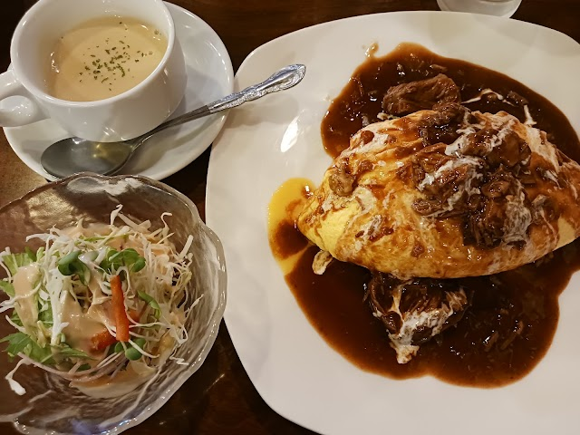
| 営業時間 | 月・火・水・金・土・日 11:30〜20:30 |
|---|---|
| 定休日 | 木曜 |
| 住所 | 新潟県長岡市西津町３８００−１ |
| 予約 | 可 — ☎ 0258-28-2802 |
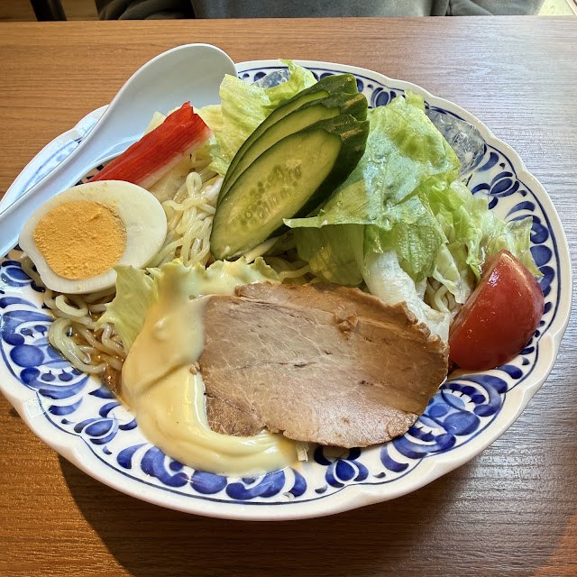
| 営業時間 | 月・火・水・木・金・土・日 10:00〜19:00 |
|---|---|
| 定休日 | なし(要最終確認) |
| 住所 | 新潟県長岡市大手通１丁目４−１２ 1F |
| 予約 | 要確認 — ☎ 0258-36-0852 ／ 公式サイト |
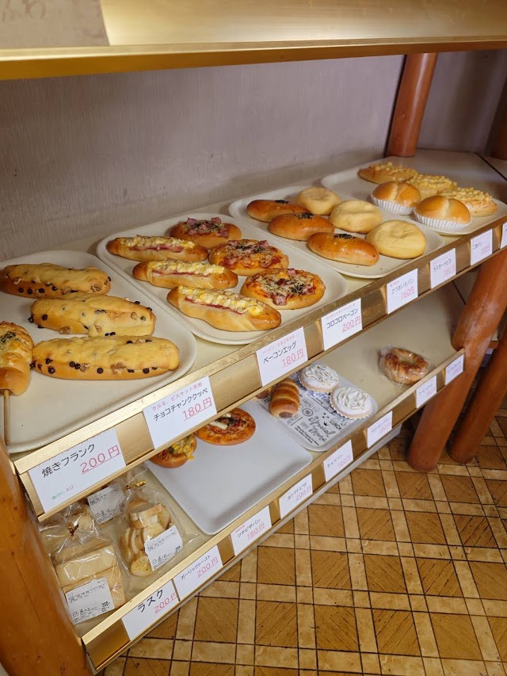
| 営業時間 | 月・火・水・木・金・土 7:30〜18:30 |
|---|---|
| 定休日 | 日曜 |
| 住所 | 新潟県長岡市摂田屋４丁目７−３１ |
| 予約 | 要確認 — ☎ 0258-32-0981 |
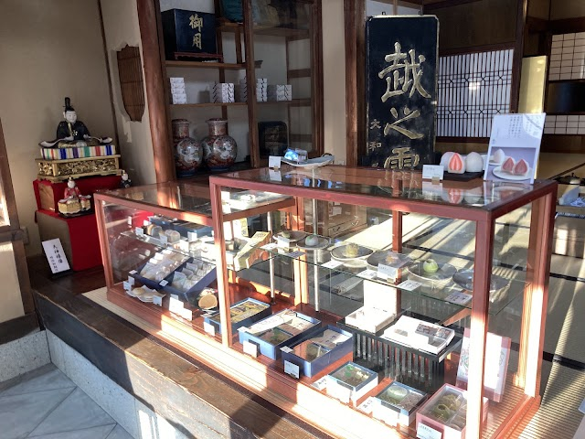
| 営業時間 | 月・火・水・木・金・土 9:00〜17:30 |
|---|---|
| 定休日 | 日曜 |
| 住所 | 新潟県長岡市柳原町３−３ |
| 予約 | 要確認 — ☎ 0258-35-3533 ／ 公式サイト |
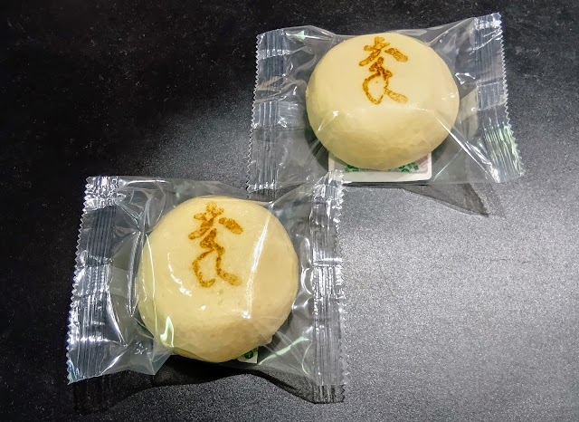
| 営業時間 | 月・水・木・金・土・日 9:00〜17:00 |
|---|---|
| 定休日 | 火曜 |
| 住所 | 新潟県長岡市表町１丁目１０−３５ |
| 予約 | 要確認 — ☎ 0258-32-1456 ／ 公式サイト |
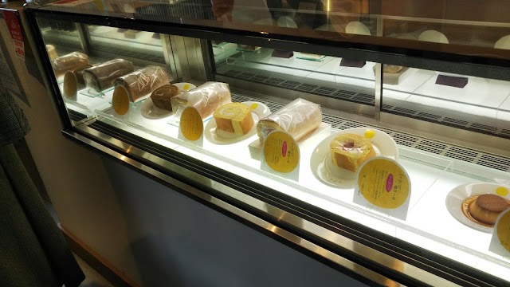
| 営業時間 | 月・火・水・木・金・土・日 9:00〜18:00 |
|---|---|
| 定休日 | なし(要最終確認) |
| 住所 | 新潟県長岡市宮本東方町５２−１ |
| 予約 | 要確認 — ☎ 0258-47-4105 ／ 公式サイト |
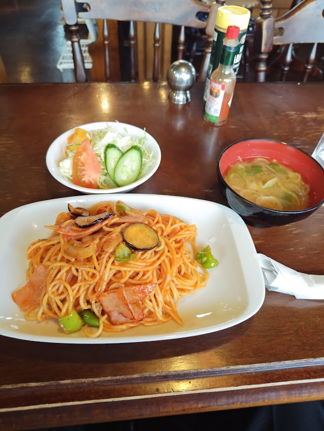
| 営業時間 | 月・火・水・木・金・土・日 8:00〜19:00 |
|---|---|
| 定休日 | なし(要最終確認) |
| 住所 | 新潟県長岡市片田町９９８ ドライブインペペ |
| 予約 | 可 — ☎ 0258-22-2900 |
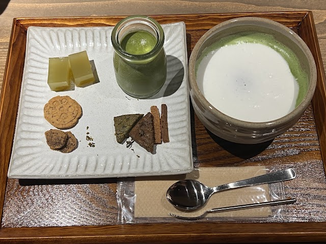
| 営業時間 | 水・木・金・土 10:30〜17:00 |
|---|---|
| 定休日 | 月・火・日曜 |
| 住所 | 新潟県長岡市与板町与板４２３ |
| 予約 | 要確認 — ☎ 090-4725-4702 ／ 公式サイト |
本ガイドは個人利用目的で作成。掲載情報は2026年8月時点の調査に基づく。写真出典: Google Maps投稿写真(©各投稿者/Google)。